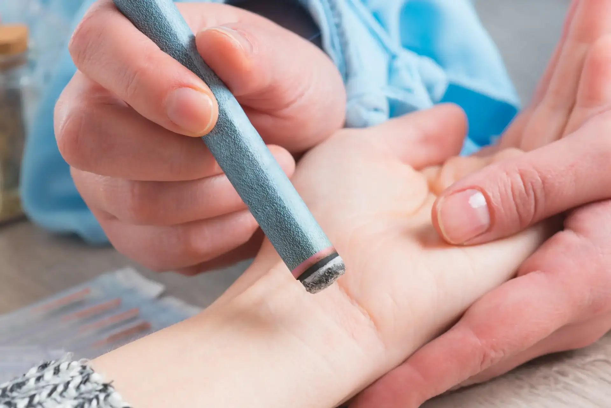

La Moxibustion est une technique ancestrale de stimulation des points d’acupuncture par l’application de chaleur induite par la combustion d’armoise, plante médicinale de la pharmacopée chinoise aux propriétés stimulantes et fortifiantes du système immunitaire.
La chaleur produite pénètre en douceur et profondeur dans le corps et permet d’activer les points d’acupunctures facilitant la circulation du Qi et du sang dans les méridiens.